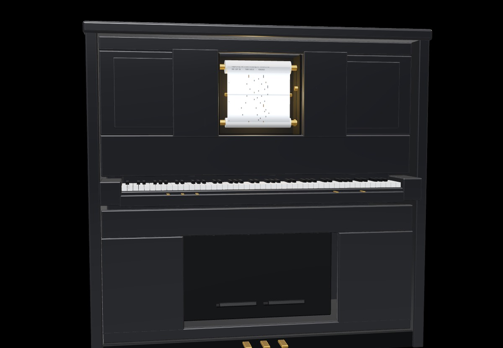

Delos archive // Builds 01–08
Essays
Read our work responding to Plutarch throughout the semester.
Eight builds on one roll // scroll to wind it

Delos archive // Builds 01–08
Read our work responding to Plutarch throughout the semester.
Eight builds on one roll // scroll to wind it